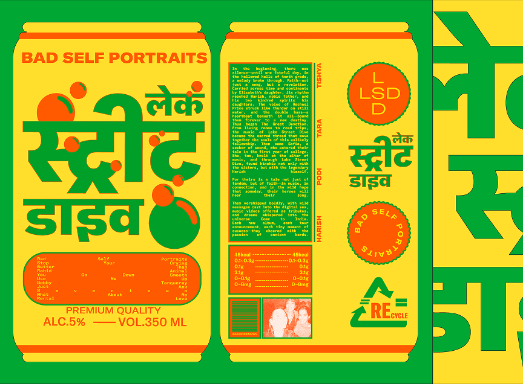
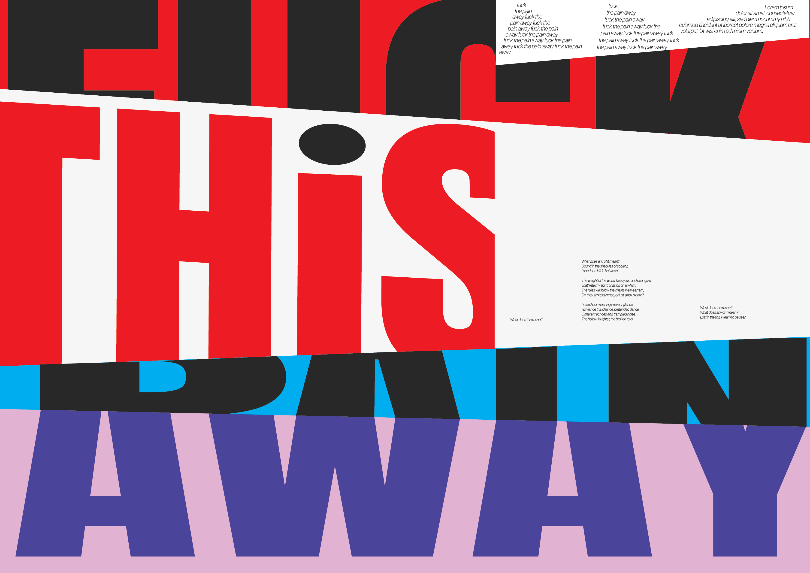
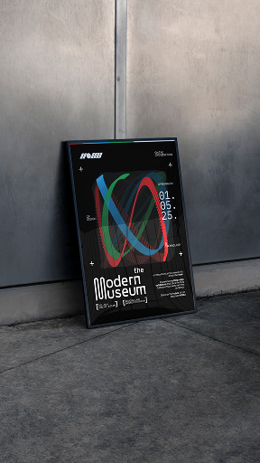
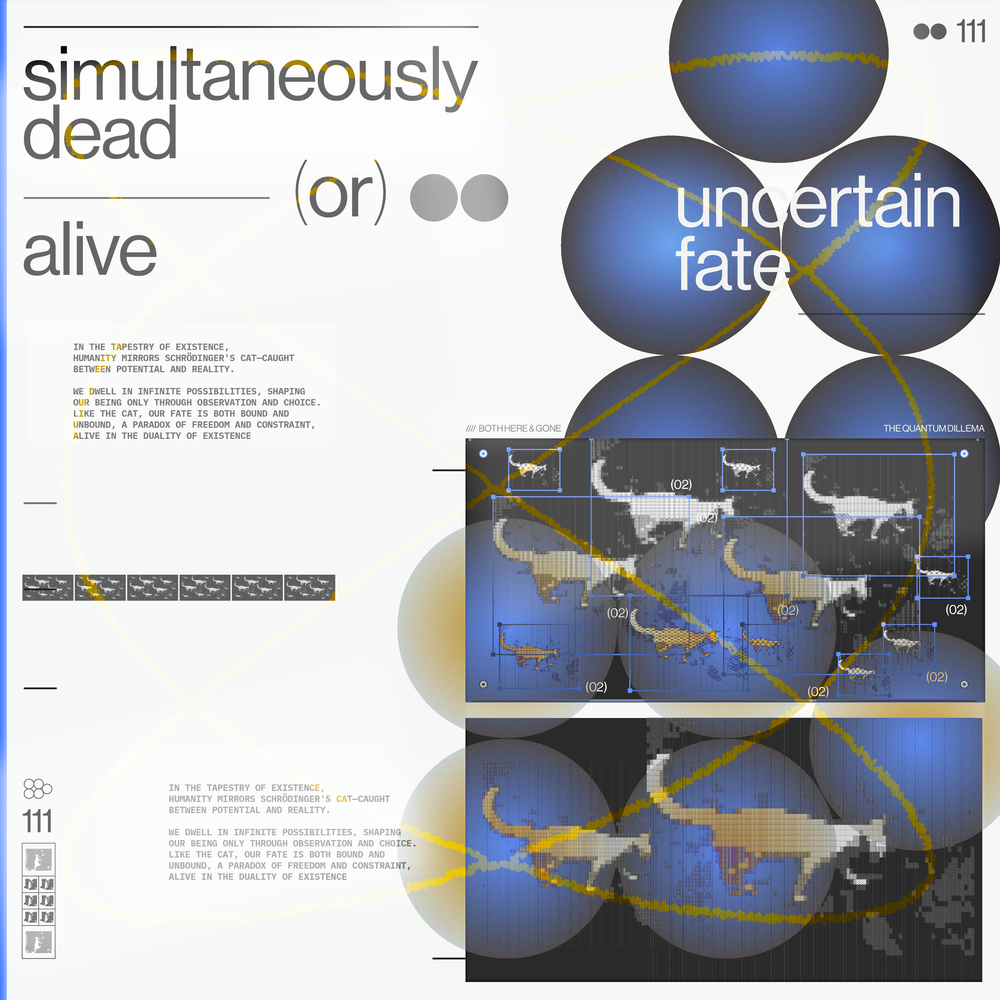
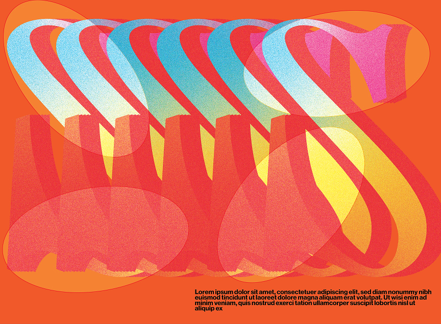
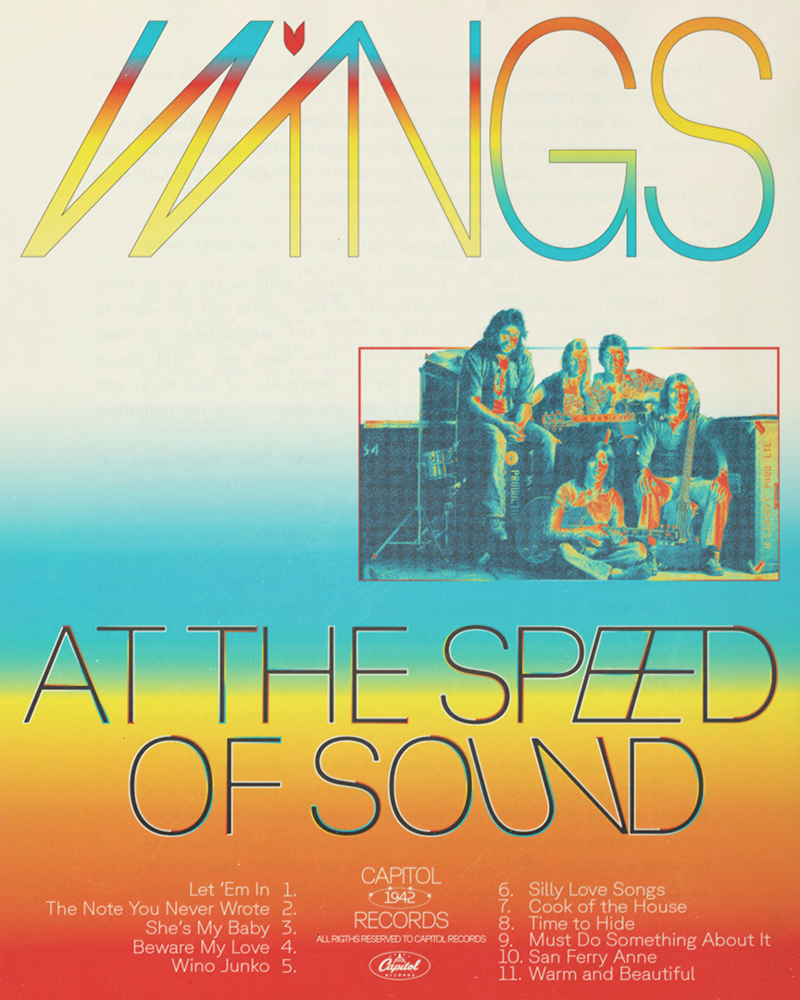

New Delhi, IN
I'm a designer and creative coder working at the intersection of generative identities & visual systems. My practice focuses on creating autonomous branding tools that empower workflows and enable internal teams to adapt design systems with flexibility.
Currently, I work at Public Knowledge Studio, where I research and develop generative tools & flexible visual systems.
Input/Output






